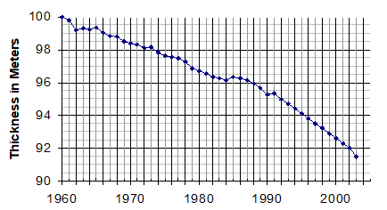
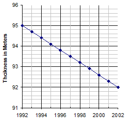
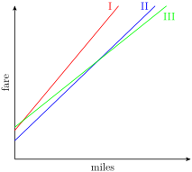

This Lesson reviews the notion of slope, which students learned in elementary algebra, but emphasizes the meaning of the slope as a rate of change. Notice that in this Lesson we do not use the coordinate formula for slope, \(y=\dfrac{y_2-y_1}{x_2-x_1}\text{;}\) that formula is taken up in Lesson 1.5. All of the slopes in this Lesson can be computed from the definition, \(m = \dfrac{\Delta y}{\Delta x}\text{.}\) Encourage students to include units in their calculation of \(\Delta y\) and \(\Delta x\) to help them interpret the slope as a rate.
Two skills will probably be new to students: deciding if data are linear by checking for constant slope, and using the slope to calculate either \(\Delta y\) or \(\Delta x\text{,}\) given a value for the other.
Activity1.4.1.Calculating Rate of Change.
The graph shows how the thickness of a typical land-based glacier has changed over 43 years.

At first glance, what does the graph tell you about the glaciers?
What was the total change, \(\Delta H\text{,}\) in thickness from 1960 to 2003?
Year, \(t\)
Thickness, \(H\)
1960
\(\hphantom{00000}\)
2003
\(\hphantom{00000}\)
\(~~~~~~~~~~~~~~~\Delta H =\)
Calculate the average yearly change in thickness, \(\dfrac{\Delta H}{\Delta t}\) over that time interval. Give units with your answers.
The graph appears to be almost linear from 1992 to 2002. Read the graph to complete the table.
Year, \(t\)
Thickness, \(H\)
1992
\(\hphantom{00000}\)
2002
\(\hphantom{00000}\)

Calculate the slope of the graph from 1992 to 2002. Include units in your answer.
Compare the average yearly change you calculated in part (b) with the slope you calculated in part (d). What do those values tell us about land-based glaciers?
Activity1.4.2.Slope and Linear Models.
The taxi fare in three different cities is described below. In each city, you pay an initial charge when you get into the taxi, and the rest of your fare is based on the distance you travel. Each city uses a different distance unit to compute the fare.
City
Initial Charge
Distance Unit
Charge per Unit
Boston
\(1.45\)
\(\frac{1}{8}\) mile
\(0.30\)
Honolulu
\(2.25\)
\(\frac{1}{4}\) mile
\(0.75\)
New York
\(2.50\)
\(\frac{1}{5}\) mile
\(0.40\)
How much would a 4-mile taxi ride cost you in Honolulu?
Compute the charge per mile in each city. (Do not include the initial charge.) In which city do taxis charge the highest fare per mile?
Write a linear model for the taxi fare in each city, using miles as the input variable. (Hint: What is the initial value for each model?)
Use your models do decide in which city taxis charge the lowest fare for a 5 mile ride.
For what distance are the taxi fares in Boston and New York equal? (Hint: Use the appropriate models from part (c).)
Choose the correct graph for each city. Explain how you decided.

Activity1.4.3.Interpreting Slope as a Rate.
The amount of salt that can be dissolved in a beaker of water depends upon the temperature of the water. The table shows the amounts for several temperatures.
Temperature, \(\degree\)C, \(T\)
10
12
15
21
25
40
52
Salt, (g), \(S\)
33
34
35.5
38.5
40.5
48
54
Which variable is the input, and which is the output?
Without plotting the points, how can you decide if they will lie on a straight line? Do that.
Describe the slope of the line as a rate of change. Include units in your answer. What does the slope tell you about dissolving salt?
Use the slope to answer the question: If you increase the temperature 5°C from the current temperature, how much more salt will dissolve?
Subsection1.4.1Check Your Understanding
What mathematical concept did you study in Activity 1?
What two numbers did you need to write each linear model in part (b) of Activity 2?
What algebraic technique did you use in part (d) of Activity 2?
Describe one new skill or idea you learned from Activity 3.
Subsection1.4.2Wrap-Up
In this Lesson, we worked on the following skills and goals:
Use ratios and rates for comparison.
Compute and interpret a rate of change.
Interpret slope as a rate of change.
Illustrate slope on a graph.
Use the definition of slope to compute \(\Delta y\) or \(\Delta x\text{.}\)
Recognize a linear relationship by its constant rate of change.
Write a linear model using slope and initial value.
Subsection1.4.3Questions for Writing or Discussion
What do we use ratios and rates for?
Suppose represents your distance from home, in miles. Compare the meanings of the two statements \(x=30\) and \(\Delta x=30\text{.}\)
Explain how slope measures the steepness of an incline.
State two useful consequences of the fact that lines have constant slope.
Concept Questions.
Suppose \(y\) gives the weight in pounds of a bottle of water that holds \(x\) quarts. What are the units of \(\dfrac{\Delta y}{\Delta x}\) ?
Water per bottle
Quarts per pound
Pounds per quart
Quart-pounds
What is wrong with the following reasoning? The point \((10,7)\) lies on the graph of a line, so the slope of the line is \(\dfrac{7}{10}\text{.}\)
The slope is \(\dfrac{10}{7}\text{.}\)
7 is not an intercept.
We need two points to compute the slope.
The line is decreasing.
How can you tell from the equation of a line whether its graph is increasing or decreasing?
Its slope is positive.
Its \(x\)-intercept is positive.
Its slope is negative.
Its \(y\)-intercept is negative.
Comment on the following calculation: The intercepts of a line are \((0,3)\) and \((5,0)\text{,}\) so the slope of the line is \(\dfrac{3}{5}\text{.}\)
It’s true because we used two points.
It’s false because \(\Delta x\) and \(\Delta y\) have opposite signs.
It’s true because the values are increasing.
It’s false because the slope is \(\dfrac{5}{3}\text{.}\)